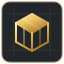

Brush modellingDevelopment guide — public downloads are currently paused. See Changelog for release status.
Edit vertices, edges and faces directly in the map. Inset switches between Region and Individual; Hollow creates a brush shell, and Bridge joins selected faces with adjustable segments and cross-section sides. Preview the result before applying it.
Workflow
- Create a brush with Block, then switch to Mesh and choose vertices, edges or faces.
- Use I for Inset. Press I again in the preview to switch Region and Individual. Apply commits the operation; Cancel leaves the original geometry.
- Hollow creates a shell of ordinary brushes with an inward or outward wall thickness. Bridge connects selected faces, with independent length segments and section sides.
- Use Face → Material → Smoothing Groups for groups 1–24 (smooth) and 25–32 (hard edge). Mixed assignments are marked; Clear removes the groups.